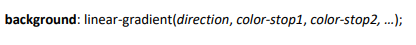

Nah, CSS juga punya fitur untuk memberikan warna berupa gradasi warna, lo.
Struktur Penulisan:

<button class="my-btn">
button
</button>
.my-btn {
margin: 20px 0;
padding: 1rem 1.5rem;
background: linear-gradient(to right, salmon, crimson);
border: none;
color: white;
font-size: 1rem;
border-radius: 10px;
font-weight: 700;
cursor: pointer;
}